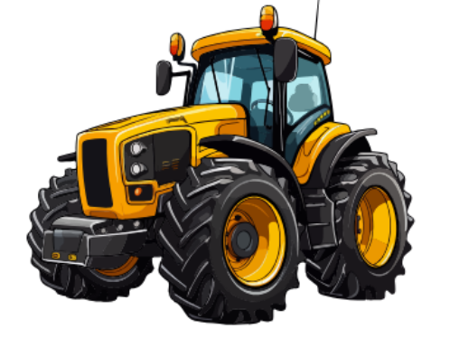

Aqui você poderá encontrar informações sobre: agricultura, sustentabilidade, e muito mais.
Venha descobir esse mundo cheio de caminhos a esplorar!

Aqui você poderá encontrar informações sobre: agricultura, sustentabilidade, e muito mais.
Venha descobir esse mundo cheio de caminhos a esplorar!


Essa área trata de um tipo de gestão de informação sobre cultivos agrícolas, desde o plantio à colheita. A agricultura de precisão esta associada ao uso de aparelhos tecnológicos, buscando uma forma sustentável de continuar o plantio e atender a população.
O projeto de modernização da agricultura surgiu antes do período da Revolução Industrial, porém somente na década de 1980, na Europa e Estados Unidos a agricultura de precisão moderna pode se moldar como conhecemos.
Essa área da agricultura tem por objetivo atuar nas mais diversas áreas do plantio e colheita. Aperfeiçoando o manejo de culturas, o uso de insumos, reduzindo o custo de produção e aumentando a produtividade, tudo para garantir um futuro sustentável à produção agrícola.
As ferramentas representam um importante papel para a agricultura de precisão, utilizadas desde para evitar desperdícios até o uso de softwares para dados geográficos. Entre essas ferramentas temos: GPS, GIS, sensores de solo, sensores remotos, sistemas de mapeamento de colheita, drones, etc.
A agricultura familiar é uma modalidade de produção da agricultura, nela a maior parte da mão de obra é exercida por unidades familiares, sendo desempenhada em pequenas propriedades. Apesar de utilizar somente 23% da área total dos estabelecimentos agrícolas, segundo o Censo Agropecuário de 2017, esse modo de produção é responsável pela alimentação brasileira.
Agricultura demonstra sua importância ao fato de fornecer alimentos à população brasileira combatendo a insegurança alimentar, além disso é expoente na movimentação da economia e compõem parte significativa da sustentabilidade do país.
Esse setor agricola produz uma ampla variedade de alimentos, entre eles: milho, mandioca, pecuária leiteira, ovinos, caprinos, olerícolas, feijão, cana, arroz, suínos, aves, café, trigo, fruticulturas, hortaliças, entre outros. Dessa forma, se torna relevante economicamente e socialmente.
O melhoramento genético é obtido através de diversas abordagens entre elas: a genética a qual trata do estudo completo do genoma das plantas, controlando características importantes; os marcadores moleculares associados as sequencias de DNA favoráveis da planta; e a transgenia, que introduz genes estranhos no genoma da planta, dando-lhe novas características. São exemplos de plantas geneticamente modificadas o Milho Bt e o Algodão Bt.
Os biofertilizantes, desenvolvidos para substituir o uso dos convencionais, utilizam-se de microrganismos para fixar o nitrogênio do ar no solo ou solubilizar nutrientes minerais, essenciais para o desenvolvimento da planta. Desse modo, esse mecanismo auxilia no aumento da produtividade, melhora a qualidade nutricional dos alimentos e reduz a poluição causada pelos fertilizantes comuns.
O uso do solo e a garantia de sua qualidade são extremamente importantes para a agricultura, tendo em vista que, todo plantio depende deste. Assim, ao desenvolver bioindicadores, trabalhar na biorremediação e utilizar outras tecnologias, a biotecnologia se torna essencial para manter um uso saudável da terra, identificando problemas, contaminações e riscos de uso.
Além da área de plantio, a pecuária também é indispensável para a vida humana, assim a biotecnologia desenvolve uma série de tecnologias para a vida animal como a seleção assistida, a clonagem, as vacinas, tratamentos e suplementos. Todas voltadas para a produção animal, aumentando seu número e qualidade.
A sustentabilidade diz respeito a práticas que visam a preservação do meio ambiente, o qual vem, a muitos anos, sendo desgastado, implicando uma série de respostas negativas, como por exemplo o aquecimento global. Logo, a sustentabilidade afeta profundamente nas relações sociais, de governança e se mostra uma responsabilidade de todos, já que preservar significa deixar um legado e marca para as próximas gerações.
Certamente essas duas áreas vem crescendo exponencialmente ao longo dos anos, mas de forma alguma são opostas, a sustentabilidade está profundamente ligada à agricultura e é importante para seu desenvolvimento de forma que respeite as necessidades do meio ambiente. Assim, diversas práticas agrícolas se juntam a ações sustentáveis, em exemplo a rotação de culturas e a agricultura de precisão.
Ao utilizar-se de tecnologias como os drones, sensores e irrigadores programáveis, a agricultura de precisão é fundamental para manter um plantio colaborativo ao meio ambiente por reduzir desperdícios de água e garantir o uso correto do solo usado no plantio.
O campo é responsável por alimentar todos do meio urbano, bem como fornecer matéria-prima para todas as indústrias. Por outro lado, a cidade fornece tecnologias para o desenvolvimento da agricultura e pecuária, dispõe de serviços básicos e garante que o meio rural movimente-se economicamente. Dessa maneira, pode-se notar que a conexão entre estes dois grandes meios é essencial para seus desenvolvimentos e crescimentos, que se tornam cada vez mais próximos e interdependentes por comporem um grande sistema.
O campo é responsável por alimentar todos do meio urbano, bem como fornecer matéria-prima para todas as indústrias. Por outro lado, a cidade fornece tecnologias para o desenvolvimento da agricultura e pecuária, dispõe de serviços básicos e garante que o meio rural movimente-se economicamente. Dessa maneira, pode-se notar que a conexão entre estes dois grandes meios é essencial para seus desenvolvimentos e crescimentos, que se tornam cada vez mais próximos e interdependentes por comporem um grande sistema.
Você precisa ajudar a laranjinha, residente do campo, a achar seu caminho até a vendinha de suco de laranja, na cidade. Tendo cuidado em não esbarrar nos obstáculos cinzas, mova o mouse sobre os ladrilhos do labirinto para a laranjinha chegar à seu destino!
Pronto! Agora é só por a mão na massa e se divertir.